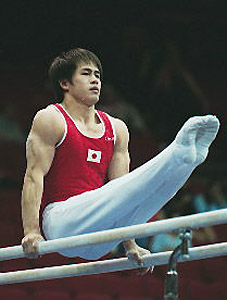

Hiroyuki Tomita (JPN)
2005 World AA Champion
2004 Olympic PB Silver Medalist

Medal Total
Olympic Games: 1
Gold, 1 Silver
World Championships: 1 Gold, 2 Silver
World Cup: 1 Silver
Hiroyuki was born on November 21, 1980.
Competition Results
1997
Canberra Cup: 5th AA, 2nd PB, 3rd FX, 4th PH, 4th R, 4th HB
1998
Canberra Cup: 2nd AA, 3rd R
2000
JPN Championships: 6th AA
World Stars: 2nd HB
2001
Chunichi Cup: 4th AA, 1st R, 1st PB, 5th HB
East Asian Games: 3rd AA
JPN Championships: 1st AA
NHK Cup: 2nd AA
University Games: 2nd AA, 1st PB, 2nd PH
2002
American Cup: 3rd AA
Asian Games: 4th AA, 1st HB, 3rd R, 7th PH, 8th PB
Chunichi Cup: 1st AA, 1st R, 2nd PH, 2nd PB
World Championships: 4th R
2003
American Cup: 3rd AA
Chunichi Cup: 1st AA
NHK Cup: 1st AA
World Championships: 3rd Team, 3rd AA, 4th R
2004
Chunichi Cup: 1st AA, 1st R, 3rd PH, 4th PB
French International: 8th PH
Olympic Games: 1st Team, 6th AA, 2nd PB, 4th R, 8th PH
World Cup: 2nd R, 5th PB
2005
JPN World Trials: 2nd AA
University Games: 1st AA, 1st R, 1st HB, 3rd FX
World Championships: 1st AA, 8th PH, 8th HB
This page was created on May 20,
2006.
© Gymn Forum